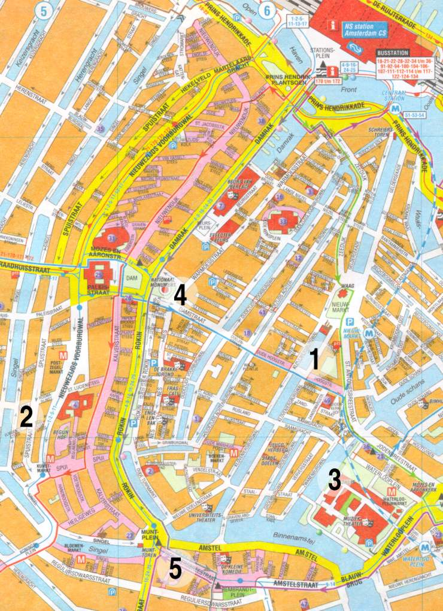

Subsections
Map

- Conference venue: Het
Trippenhuis, Kloveniersburgwal 29
- Conference hotel: Tulip
Inn, Spuistraat
288-292
- Mayor's reception: ``Koffiekamer Raad'' of City Hall, Amstel 1
- Conference banquet: ``Wintertuin'' of
Hotel Krasnapolsky,
Dam Square 9
- Internet Café
easyEverything:
Regulierstraat 22 (open 24 hours, ticket included in portfolio)
Lunch Restaurants
Amsterdam is full of restaurants. Most areas offer expensive as well
as inexpensive restaurants, of many ethnic varieties, and the
Nieuwmarkt-area is one of the better areas. Below we list some
suggestions for places to have lunch in the vicinity of the conference
venue. Additional information can be found in the
Internet Guide to
Amsterdam.
- 6-8: Amsterdam Brouwhuis Maximiliaan
- 14: Song Kwae (Thai)
- 18: Raan Phad Thai
- 34: Avi's Roti Shop (Surinam)
- In the middle of the square: De Waag
- 10: Chao Praya (Thai)
- 15: Café Fonteyn
- 18: Albert Heijn (a supermarket, also selling sandwiches etc.)
- 24: Poco Loco (Mexican)
- 26: Plein 26 (snack bar, French fries)
- 34: Lokaal 't Loosje (sandwiches)
- 38: Toho Joyce (Indonesian)
- 109: 't Tuinfeest
- 129: Eetcafé Stevens
- Many small and inexpensive restaurants, particularly Chinese ones
- 1: Dutch Bakery
- 25: Bonjour Madame (bakery)
- 142: Tisfris
- 3: Katz
- 94: Soup en zo (soup and sandwiches)
Send feedback to qip@cwi.nl.